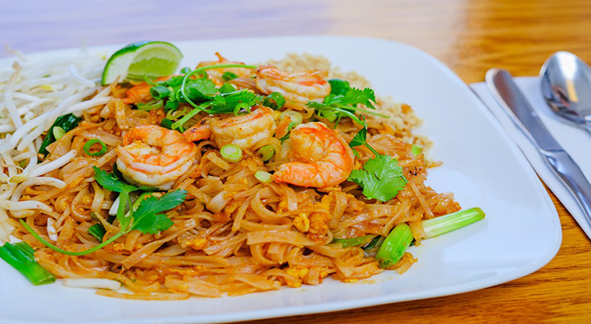

5 Heavenly Thailand Cuisines that will Change your life
Posted on April 02, 2018 at 03:50 PM
Thai Cuisine blends five fundamental tastes: sweet, spicy, sour, bitter, and salty. Common ingredients used in Thai cuisine include garlic, chillies, lime juice, lemon grass, coriander, galangal, palm sugar, and fish sauce (nam pla). The staple food in Thailand is rice, particularly jasmine variety rice (also known as “hom Mali” rice) which forms a part of almost every meal.
1. Tom Yam Gong
This is the national smell of Thailand, because of the liberal utilization of fragrant herbs. Lemongrass, lime leaves, galangal, and shallots give the critical odors, with chilis and fish sauce giving the kick. Substance comes as gigantic shrimp (goong) and mushrooms.
2. Pad Thai
Thailand’s calling card to whatever is left of the culinary world, cushion Thai needn’t bother with a presentation. There are an interminable number of minor departure from this immortal custom, however for the most part noodles are spruced up with tofu, bean sprouts, onion, and the splendid last touch: peanuts ground to close clean. Cushion Thai is a cafe cooperation dinner; you put on the completing touches of fish sauce, sugar, bean stew powder, and squashed peanuts to suit your taste.
3. Kuay Tiew
Review your chopstick abilities and prepare your slurping muscles, noodle soup is a speedy and-simple staple of the Thai eating knowledge. Varieties in fixings mean ten distinct merchants could serve it ten diverse ways ‘ making it about meriting its own particular best ten rundown. Noodles ‘ generally thin, infrequently wide ‘ are served up in a stock with pretty much any consumable meat: pork, chicken, hamburger, duck, and fish being the most mainstream. One example and you may not stop until you’ve attempted them all.
4. Som Tam
Som tam ‘ fiery papaya serving of mixed greens ‘ originates from upper east Thailand, however it’s come to close faction status all through whatever is left of the nation. Slight provincial contrasts in fixings implies position on the sweet-or-acrid scale may shift significantly between eateries. Normal to all formulas is destroyed green papaya and a sound measurement of warmth. Grilled chicken and chunks of sticky rice are the ideal allies.
5. Gai Med Ma Moung
Broiled cashew nuts. Sweet soy sauce. Nectar. Garlic. Also, obviously, bean stews ‘ it would be Thai sustenance without a little charming torment. Three cheers for the cunning soul that made sense of nuts and chicken were a decent blend. A dish this prominent must be quite great. Phuket raises the standard with a huge supply of a portion of the world’s best cashew nuts, and they’re developed locally.
Categories
Recommended

Top 5 Most Popular Foods in China
by Jomari Ondap

Top 5 Foods You Should Try If You're in India
by Jomari Ondap

Delicious and Artistic dishes anybody should try in Japan
by Erickson Javier